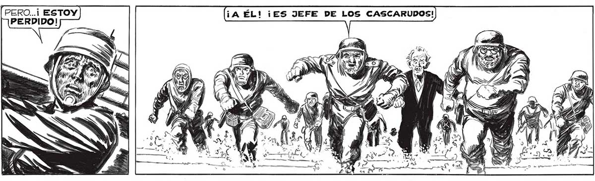
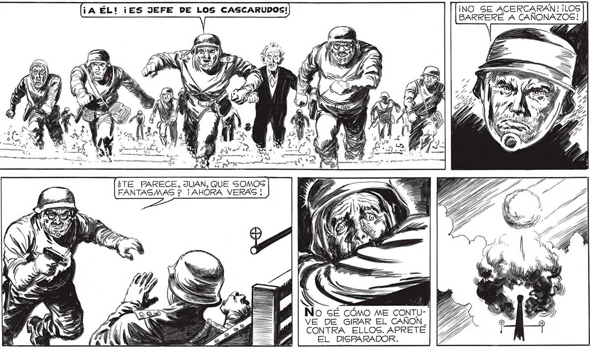
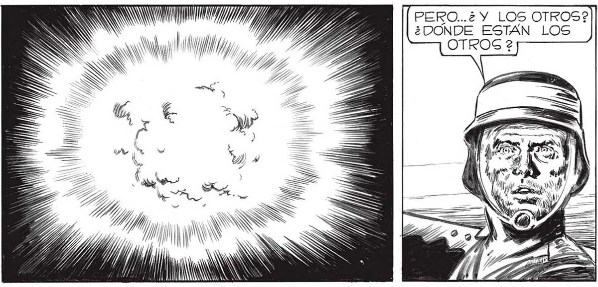

¡NO SE ACERCARAN! ¡LOS 132 BARRERE A CANÑONAZOGS! ¿TE PARECE, JUAN, QUE SOMOS PERO... ¿QUÉ IBA A HACER? FANTASMAS 2? ¡AHORA VERAS ! ¡Sl NO ME ATACA NADIE! . ¡DEBE SER OTRA ALUCINACION! ¡LA MAS GRANDE DE TODAS! AN EA NS No sÉ CÓMO ME CONTUVE DE GIRAR EL CAÑON. CONTRA ELLOS. APRETÉ EL DISPARADOR. SE HABIA ACABADO LA PESADILLA, SÍ. YO HABÍA ACERTADO AL PENSAR QUE EN AQUELLA NUBE DE FORMA ESFÉRICA, ES” TABA EL ORIGEN DE | LAS ALUCINACIONES. Í PERO..¿SE HABÍA ACABADO EN VERDAD LA 6% PESADILLA? LA REALt N DAD, LA CRUDA REALIES DAD, ¿NO ERA PEOR ] QUE UNA PESADILLA? Í SEGUÍAMOS ALLI, EN EL ESTADIO. RODEADOS POR UN OCÉANO DE MUERTE. Y CASI LA MITAD DE LOS NUESTROS, MUERTOS ENTRE GÍ. LO CONSEGUI.. SE ACABO LA PESADILLA... NO MAS ALUCINACIONES... NO MAS NUBES FANTASMALES, NO MAS CIELO PLOMIZO... ¡OTRA VEZ EL SOL! PERO...¿ Y LOS OTROS? ¿DONDE ESTAN LOS OTROS 2 SS S / IWNSNSSSS Y, Yy/ / Y, Y


